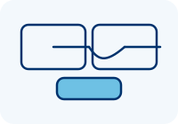

Streamline repetitive business processes with dependable integrations
Document intake, validation, routing, and archival
Ticket classification, assignment, notifications, and escalation
Scheduled imports, validation, reporting, and exception handling
Build, testing, deployment, and review workflows
We analyze requirements, controls, exceptions, and integration points.
We build and test clear business rules using representative data and scenarios.
We deploy workflows with monitoring, documentation, and reliable system integration.
Let us help you automate repetitive work with transparent, maintainable business rules.
Discuss Your Project